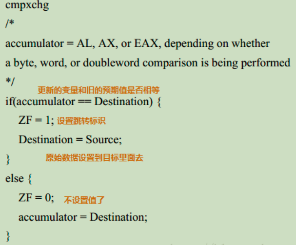

一、CAS（无锁的执行者）
CAS包含3个参数：内存值 V 旧的预期值 A 新值 B
当且仅当V值等于A值时，将V的值改为B值，如果V值和A值不同，说明已经有其他线程做了更新，则当前线程什么都不做，最后返回当前V的真实值。CAS操作是抱着乐观的态度进行的（乐观锁），它总是认为自己可以成功地完成操作。
当多个线程同时使用CAS操作一个变量时，只有一个会胜出并成功更新，其余均会失败；但失败的线程并不会挂起，仅是被告知失败，并且允许再次尝试，也允许失败的线程放弃操作。基于这样的原理，CAS操作即使没有锁，同样知道其他线程对共享资源操作的影响，并执行相应的处理措施。
由于是无锁操作，因此不可能出现死锁情况。
CAS是一条CPU的原子指令，不会造成所谓的数据不一致问题。
二、ABA问题
CAS会导致“ABA问题”。CAS算法实现一个重要前提需要取出内存中某时刻的数据，而在下时刻比较并替换，那么在这个时间差中可能导致数据发生变化。
比如一个线程one从内存位置V中取出A，这是另一个线程two也从内存中取出A，并且two进行了一些操作变成了B，然后two又将V位置的数据变成A，这时候线程one进行CAS操作发现内存中仍然是A，然后one操作成功。尽管线程one的CAS操作成功，但是不代表这个过程就是没有问题的。
部分乐观锁的实现是通过版本号（version）的方式来解决ABA问题，乐观锁每次在执行数据的修改操作时，都会带上一个版本号， 一旦版本号和数据的版本号一致就可以执行修改操作并对版本号执行+1操作，否则就执行失败。因为每次操作的版本号都会随之增加，所以不会出现ABA问题，因为版本号只会增加不会减少。
三、原子包 java.util.concurrent.atomic
JDK1.5的原子包：java.util.concurrent.atomic这个包里面提供了一组原子类。其基本特性是：在多线程环境下，当有多个线程同时执行这些类实例包含的方法时，具有排他性，即当某个线程进入方法，执行其中的指令时，不会被其他线程打断，而别的线程就像自旋锁一样，一直等到该方法执行完成，才由JVM从等待队列中选择另一个线程进入。相对于synchronized这种阻塞算法，CAS是非阻塞算法的一种常见实现。由于一般CPU切换时间比CPU指令集操作更加长，所以JUC在性能上有了很大的提升。如下代码：
1 public class AtomicInteger extends Number implements java.io.Serializable {
2 private volatile int value;
3 public final int get() {
4 return value;
5 }
6 public final int getAndIncrement() {
7 for (;;) { //CAS 自旋，一直尝试，直达成功
8 int current = get();
9 int next = current + 1;
10 if (compareAndSet(current, next))
11 return current;
12 }
13 }
14 public final boolean compareAndSet(int expect, int update) {
15 return unsafe.compareAndSwapInt(this, valueOffset, expect, update);
16 }
17 }getAndIncrement采用了CAS操作，每次从内存中读取数据然后将此数据和+1后的结果进行CAS操作，如果成功就返回结果，否则重试直到成功为止。而compareAndSet利用JNI来完成CPU指令的操作。
